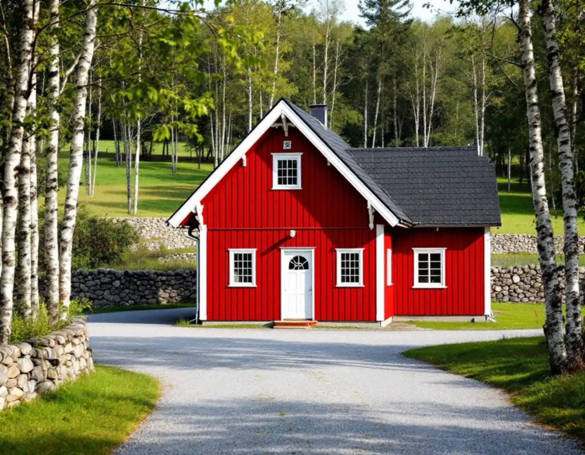
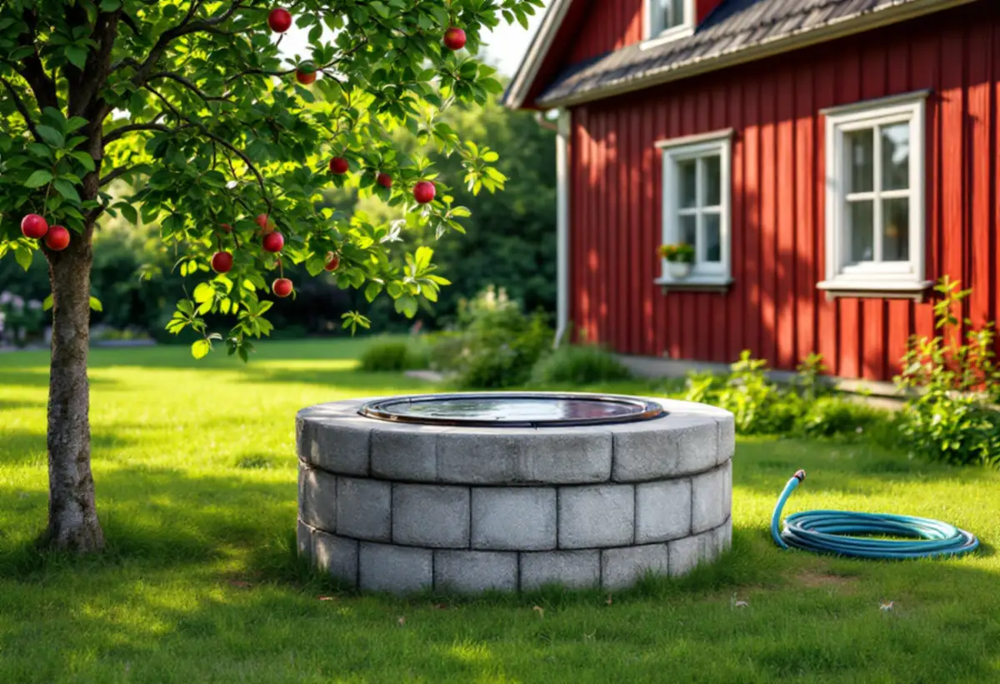
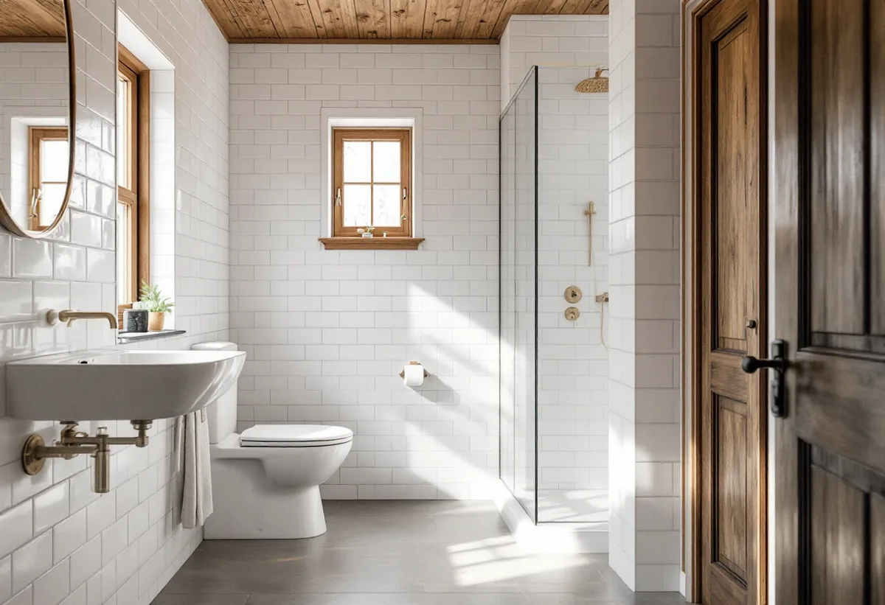

Platsbesök
Vi går igenom huset, brunnen och avloppsanläggningen.

Många hus i Norrtälje har egen brunn och eget avlopp, och en totalrenovering med nytt badrum, ny toalett eller fler gäster påverkar båda.
Beskriv jobbet kort.
Något blev fel. Kontrollera uppgifterna eller ring 08 12 410 276.
Vi tittar på jobbet på plats innan du får offert.
Du ser vad som ingår och vad det kostar.
Vi drar av ROT direkt och sköter ansökan.
Geal Entreprenad AB, Bromma. Org.nr 559303-7566.

Geal Entreprenad AB totalrenoverar hus i Norrtälje och tar med vatten och avlopp i planeringen från början.
Norrtälje kommun beskriver sig som en av Sveriges största landsbygdskommuner. Omkring 32 000 personer bor på kommunens landsbygd, och därtill finns drygt 26 000 fritidshus, där ungefär en fjärdedel av brukarna vistas större delen av året i kommunen.
Sedan 1982 har landsbygdsbefolkningen ökat med omkring 60 procent. Det betyder att många hus som byggdes för sommarbruk eller ett enklare liv nu renoveras för att fungera året runt, och utanför tätorterna sker det ofta med egen brunn och eget avlopp.

Kommunen skriver att det krävs tillstånd för att installera ett avloppssystem för bad-, disk- och tvättvatten, att koppla en vattentoalett till ett befintligt avlopp som tidigare bara tagit emot BDT-vatten, och att flytta en befintlig avloppsanläggning. Åtgärden får inte påbörjas innan tillståndet finns.
Ska ett utedass eller en torrtoalett ersättas av en vattentoalett i renoveringen är det just den situationen kommunen beskriver, och tillståndet behöver sökas innan badrummet byggs.
Anmälan räcker enligt kommunen när fler byggnader kopplas på en befintlig enskild avloppsanläggning, till exempel ett attefallshus, garage eller gäststuga, när en vattenspolande toalett byts mot en som använder mer spolvatten, och när reningsteknik eller funktion ändras. Anmälan ska göras sex veckor innan du avser att utföra åtgärden.
Kommunen påpekar att reglerna för enskilda avlopp kan avvika från andra kommuners, och rekommenderar att du gör en ansökan om du är osäker. Ärendet kan då övergå till anmälan, och kräver det ingenting avslutas det utan avgift.
Med egen brunn ansvarar du själv för att den ger tillräckligt med vatten och att vattnet håller godkänd kvalitet. Kommunen hänvisar till Livsmedelsverket, som rekommenderar att små dricksvattenanläggningar för privat bruk analyseras minst vart tredje år, och oftare om det finns små barn i hushållet eller om man misstänker en förändring.
Norrtälje är en kustnära kommun som till största delen ligger under den så kallade marina gränsen, och kommunen påpekar att man vid brunnsborrning nära kusten bör ta hänsyn till risken att saltvatten tränger in. Ökar vattenförbrukningen efter renoveringen är det klokt att ta ett nytt vattenprov.
Ett nytt badrum, en tvättmaskin och en diskmaskin ökar mängden avloppsvatten. Vi går igenom med dig vad avloppsanläggningen har tillstånd för och tar in rätt kompetens när den behöver ändras, innan badrummet byggs.
Om badrummet i sig kan du läsa under badrumsrenovering i Norrtälje, och om köket under köksrenovering i Norrtälje.
Vi går igenom huset, brunnen och avloppsanläggningen.
Avloppsfrågan reds ut och söks i tid.
Varje del och varje moment står för sig.
Badrum och kök byggs när avloppet är klart.
Ett nytt prov tas när huset används som planerat.
Vi lämnar dokumentation över installationerna.
För ett småhus räknar Skatteverket bland annat att riva väggar och bygga om planlösningen, arbeta med tilläggsisolering, sätta kakel och klinker och göra förbättringsarbeten som rotarbete. Avdraget gäller både permanentbostad och fritidshus som du äger och själv använder.
Avdraget är högst 30 procent av arbetskostnaden och högst 50 000 kronor per person och år, och äger ni huset två kan båda göra avdrag. Material och resor ger inget avdrag. Geal drar av beloppet direkt på fakturan.
Husets skick, om avloppet behöver byggas om, avståndet till brunn och anläggning, el och VVS och vilka ytskikt du väljer. Läs mer under villarenovering. Efter ett gratis platsbesök får du ett skriftligt kostnadsförslag.
Renovera hela huset eller lägenheten.
Villarenovering →Takbyte, takbesiktning och plåtarbeten.
Takläggare i Norrtälje →Roslagen, skärgård och fritidshus.
Takrenovering i Norrtälje →Stugtomter, strandskydd och avlopp.
Attefallshus i Norrtälje →Fritidshus, WC-tillstånd och brunn.
Badrumsrenovering i Norrtälje →Nytt hus, förhandsbesked och egen brunn.
Byggföretag i Norrtälje →Ljust bostadshus och röda uthus.
Fasadmålning i Norrtälje →Bruksvillor, sommarvillor och Roslagens trähus.
Fasadrenovering i Norrtälje →Roslagens hus, bruksorter och bidrag i Norrtälje.
Fönsterbyte i Norrtälje →Gårdar, timmerhus och lösa innerbågar i Roslagen.
Fönsterrenovering i Norrtälje →Plankgolv i gamla gårdar och parstugor.
Golvläggare i Norrtälje →Från slipat eller lackat golv till skurgolv.
Golvslipning i Norrtälje →Gasolspis, vedspis och pentry i gäststugan.
Köksrenovering i Norrtälje →Takskydd, rännor och skorstensplåt i Norrtälje.
Plåtslagare i Norrtälje →Kust, snö och Roslagens tak.
Takbyte i Norrtälje →Ny tapet i fritidshus och villor.
Tapetsering i Norrtälje →Tidigare tillbyggnader, strand och frivilligt lov.
Tillbyggnad i Norrtälje →Trähus, fritidshus och kustlägen i Norrtälje.
Målare i Norrtälje →Fritidshus, altan och gäststuga.
Snickare i Norrtälje →Eller ring 08 12 410 276, mån–fre 08–17.
Beskriv jobbet kort.
Något blev fel. Kontrollera uppgifterna eller ring 08 12 410 276.